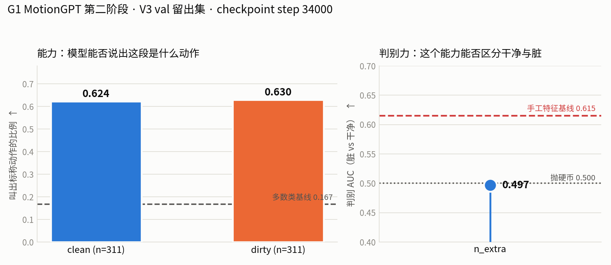

Generated from Markdown source: report/G1_MotionGPT/2026-08-11-g1-motiongpt-stage2-v3-in-training.md
G1 MotionGPT Stage 2 — 把 VADCompose V3 加入训练数据后的动作命名与污染判别
Preliminary。第二阶段（动作-语言模型）先只用 BABEL 训练、再把 VADCompose V3 的干净段加入训练， 本报告记录两轮的观测、两个测量缺陷的修复，以及目前能与不能证明的结论。
Conclusion
INCONCLUSIVE（前置条件 PASS，污染判别读数 FAIL；第二轮训练仍在进行，最终数字 PENDING）
- 加入 V3 后前置条件成立：模型在 V3 干净段上叫出标称动作的比例 62.4%，多数类基线 16.7%（主表）。只用 BABEL 训练时该能力不可用——BABEL 的
act_cat词表把握手说成arm movements、把抱臂说成touching body part。 - 反向信号是决定性的：同一模型在脏段上叫出标称动作的比例是 63.0%，与干净段无差异，
n_extra判别 AUC 0.497，靶子是手工特征基线的 0.615。 - 本轮不能证明"动作-语言模型对污染无效"：只证明这两个读数（有没有叫出标称动作、多叫了几个动作）不携带污染信息。
- 当前决定：第二轮训练跑完后按同一口径出最终数字；在此之前不追加训练预算，改为设计不依赖"生成动作名"的读数。
Problem and terminology
研究问题：一个在 G1 空间自训的动作-语言模型，能否通过"说出这一段里有哪些动作"来判别 VADCompose 片段是否被污染？
| Term | Operational definition in this report | Scope / not to confuse with |
|---|---|---|
| 动作分词器 | 第一阶段训练的 VQ-VAE，把 20 fps × 106 维 G1 特征按 4 帧压成 1 个离散码字，码本 512 词；第二阶段全程冻结 | 不是动作分类器；它没有类别概念 |
| m2t | motion-to-text：输入动作码字，输出动作名文本。本报告的判别读数全部由它产生 | 与 t2m（照文本生成码字）相对，t2m 只作反向约束 |
named_nominal |
m2t 生成文本解析出的动作集合是否包含该段的标称动作，逐段 0/1，按段平均 | 不是分类准确率：模型未被告知候选集，可输出任意动作名 |
n_extra |
生成集合中既非标称动作、也不在 neutral 白名单内的动作个数 | neutral 白名单 = transition / stand / unknown，沿用 babel_reference_50hz_label_map_v2_others.json |
| V3 标签三态 | clean = 审查记录判 pass；dirty = 显式判 fail 或看过但跳过未打标；unreviewed = 两表都无，不可当负例 |
只读 reviews 表会丢掉绝大部分负例（val 侧表面 39 个，实为 1,313 个） |
| 跨 split AUC | 在 V3 val 段上训练/调参，在 V3 train 段上测；两个 split 由不同标注者审查 | 与同 split 交叉验证不可比：手工特征基线同 split 0.747、跨 split 0.615 |
| 多数类基线 | 永远输出留出集里最高频的那个标称动作（cross_arms）的命中率 |
用于判断 62.4% 是否只是先验 |
Method
Results profile：evaluator-offline（纯离线数值评测，无策略执行，不含 rollout）。
| 项 | 设置 |
|---|---|
| 骨干 | Flan-T5-Base；shared（文本 embedding）与 lm_head（文本输出头）冻结，逐参数核验梯度为 None；可训 199.02 M / 冻结 49.35 M |
| 动作词表 | 512 码字 + <som> + <eom>，并排 embedding + 输出头，从零学 |
| 训练语料（轮 1） | BABEL 窗口：AMASS→G1 池 13,016 条序列切 3–10 s 窗口，目标文本 = 窗口内所有 BABEL span 按时间顺序列举 |
| 训练语料（轮 2） | 同上 + V3 val split 的 clean 段 1,248 条（目标文本 = 标称动作本身），采样占比 v3_frac=0.35 |
| 留出 | V3 val clean 311 条 + V3 val dirty 1,313 条用于监控；V3 train split 1,772 条完全不进训练，留作最终评测 |
| 训练超参 | batch 16，lr 1e-4（OneCycle），bf16，60,000 步；报告时轮 2 在 34,000 步 |
| 评测采样 | 留出 clean 与 dirty 各取前 311 条（全部留出 clean，dirty 等量截取），贪心解码，max_new_tokens=24 |
| Criterion | Threshold | Measured | Verdict |
|---|---|---|---|
| 前置：干净段叫出标称动作 | 显著高于多数类基线 16.7% | 62.4% | PASS |
污染判别 n_extra 跨 split AUC |
> 0.615（手工特征基线） | 0.497（V3 val 留出，非跨 split） | FAIL |
| 最终跨 split AUC（V3 train 段） | > 0.615 | PENDING（训练未完成） | BLOCKED |
Run Spec 状态
方向与硬约束有确认版计划文档
docs/plans/2026-08-11-plan-experiment-g1-motiongpt-contamination.md，
其中 §3 记录了 G1 原生表示、文本侧冻结、语料来源与时基门禁。该文档的 §3 正式 spec 标注为
"待二次确认"，§2 探针 A 已标 SUPERSEDED。
NOT PREREGISTERED — 第二阶段的具体训练设置（v3_frac、步数、batch、lr、留出比例、评测采样）
没有确认版 Run Spec。已搜索：docs/plans/、report/G1_MotionGPT/、outputs/g1_motiongpt/**/evidence.json、
logs/g1_motiongpt/**/evidence.json。这些设置是对话中逐条裁定后落到代码里的，
本报告按 observed setup 记录，不称为预注册判据。
与轮 1 的差异
唯一有意的差异是训练数据：轮 1 只有 BABEL 窗口，轮 2 增加 V3 val clean 段（v3_frac=0.35）并给它专属提示词
"Name the single action performed: "。另有两处测量侧修复（见 Analysis），它们改变的是读数不是模型。
Results
主表：轮 2 checkpoint（step 34,000），修复解码缺陷后测量，V3 val 留出集，clean 与 dirty 各 311 段。
| Readout | clean | dirty | 判别 AUC ↑ | 参照 |
|---|---|---|---|---|
named_nominal（叫出标称动作，比例 ↑） |
0.624 | 0.630 | 0.497 | 多数类基线 0.167 |
n_extra（额外动作个数，段均 ↓ 表示更干净） |
0.376 | 0.370 | 0.497 | — |
| 手工特征基线（跨 split，对照） | — | — | 0.615 | extra_trees，同 split 交叉验证 0.747 |

轮 1（只用 BABEL）在同一评测下 named_nominal 干净段 0.203、脏段 0.043，AUC 0.532（val）/ 0.573（train）；
该轮数字受下述解码缺陷污染，且原 checkpoint 已被轮 2 覆盖，无法用修复后代码复测，仅作定性参照。
| 上游阶段 | 结果 |
|---|---|
| 动作分词器（150,000 步，22.2 min） | 码本使用 497/512，死码字 0；验证重建最低 0.3106 @ 16,000 步，终点 0.3190（+2.7%） |
| 语料预分词 | 13,016 条序列 → 718,315 个 token，512/512 码字全部被使用 |
| 训练语料 | 41,762 个 BABEL span，28.8% 带多个 act_cat；时长对齐门禁 duration_mismatch = 0 |
Analysis
- 加入 V3 使模型获得了在目标域用目标词表命名动作的能力（主表：62.4% vs 多数类 16.7%）。工作解释：BABEL 的
act_cat体系里没有handshake类目、cross_arms对应的是crossing limbs，模型只用 BABEL 训练时说的是arm movements这类不指向动作身份的词。此解释来自轮 1 生成文本的直接观察，非单因素隔离实验。 - 命名能力与污染判别脱钩：脏段命名率 63.0% 与干净段 62.4% 无差异。这说明污染段中的第二个动作没有进入生成结果，而不是模型认错了标称动作。为什么没有进入，本轮无法回答（
待验证）。 - 两个测量缺陷已修复，都曾把正确预测判成错误：解码在序列吐出 EOS 后继续生成，
"wave arms"被写成"wave armse"，字符串匹配随即失败（同一 checkpoint 命名率 0.148 → 0.602）；BABEL 窗口 F1 的验证生成只有 32 个样本，标准误约 ±0.08，盖住全部观测差异，且仅比"永远输出 walk/stand/transition"的常数基线（F1 0.202）高 0.047。 - 下一步不追加训练预算。理由是命名能力已达 62.4% 而判别 AUC 停在 0.497，两者脱钩不是训练量问题。改为设计不依赖"生成动作名"的读数（
待验证）。
Appendix — 头条数字代入式
named_nominal = 0.624：留出 clean 311 段，逐段判断 m2t 生成文本解析出的动作父类集合是否包含该段 action_parent，命中记 1；194 / 311 = 0.6238。
多数类基线 = 0.167：留出 clean 311 段中最高频的 action_parent 是 cross_arms，52 / 311 = 0.1672。永远输出该类的命中率即此值。
判别 AUC = 0.497：以 dirty 为正类、clean 为负类，对 n_extra 排秩（平局取平均秩）。
AUC = (R_pos − n_pos(n_pos+1)/2) / (n_pos · n_neg)，n_pos = n_neg = 311。
手工特征基线 0.615：extra_trees 在 V3 val（1,559 clean / 1,313 dirty）上训练，在 V3 train（645 clean / 1,127 dirty）上测。95% 纯度阈值下 extra_trees 无可行操作点，logistic 仅保留 2 段。
Appendix — 证据路径与命令
logs/g1_motiongpt/tokenizer/evidence.json 分词器 150k 步历史
data/processed/g1_motiongpt_corpus/PACKAGE.json 语料计数与时基门禁
data/processed/g1_motiongpt_corpus/codes.npz.json 预分词码字统计
data/processed/VADCompose_Released_Cleaned_V3/ V3 标签层（manifest + README）
outputs/g1_motiongpt/baseline_v3_labels/evidence.json 手工特征基线
outputs/g1_motiongpt/eval_v3_smoke/per_segment.json 轮 1 逐段生成文本（受解码缺陷影响）
outputs/g1_motiongpt/v3_monitor_fixed_decoding.json 主表来源
logs/g1_motiongpt/motion_lm/history.json 轮 2 训练历史
logs/g1_motiongpt/motion_lm/snapshots/ 轮 2 中间 checkpoint
uv run python src/G1_Motion_GPT/data/build_corpus.py --workers 12
uv run python src/G1_Motion_GPT/train_tokenizer.py --steps 150000 --batch 256
uv run python src/G1_Motion_GPT/pretokenize.py
uv run python src/G1_Motion_GPT/train_motion_lm.py --steps 60000 --batch 16 --v3-frac 0.35
uv run python src/G1_Motion_GPT/eval_on_v3.py --lm logs/g1_motiongpt/motion_lm/motion_lm.pt
实现源码：src/G1_Motion_GPT/（data/features.py、model/tokenizer.py、model/motion_lm.py、
data/dataset_v3.py、eval_on_v3.py）。
Appendix — 轮 1 生成文本样例（受解码缺陷影响，仅示词表错配）
标称 handshake → 'stand, then transition, then arm movements and raising body part, ...'
标称 cross_arms → 'stand, then transition, then hand movements and touching body part, ...'
标称 wave_arms → 'stretch, then transition t pose t pose t pose ...'
标称 walk → 'walk, then turn, then walk, then turn, then walk, then turn jog'
轮 2 同类样例（修复解码后）：wave_arms → 'wave arms'、kick → 'kick'、handshake → 'handshake'、
crouch → 'crouch'、cross_arms → 'cross arms'。